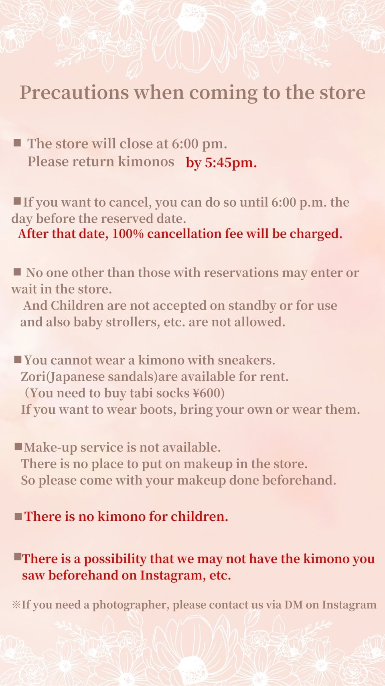
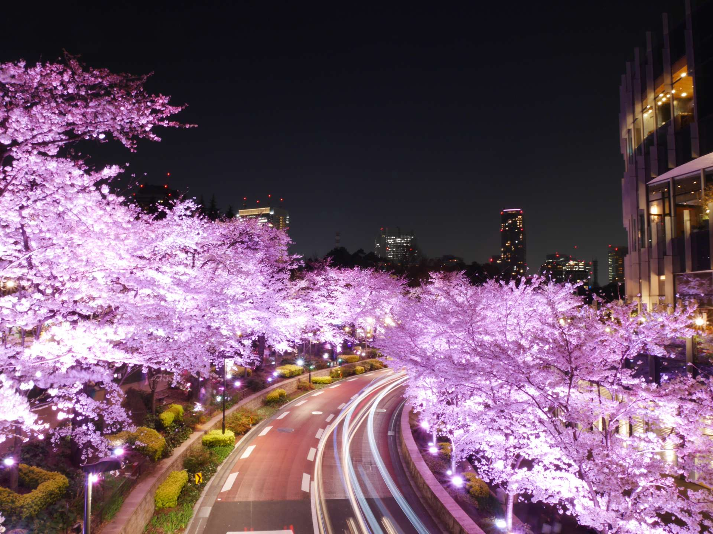

新宿->三軒茶屋->豪德寺
新宿
JR山手線
/
JR埼京線
渋谷
渋谷
東急田園都市線
三軒茶屋
三軒茶屋
東急世田谷線
宮の坂
幸福の招き猫電車 時刻表
豪德寺
三軒茶屋大猩猩館
TruffleBAKERY 三軒茶屋店
藍瓶咖啡 三軒茶屋店
三軒茶屋->淺草
三軒茶屋
東急田園都市線
表參道
表參道
地鐵銀座線
淺草
淺草KESA和服 預約
11:30
10:30前從三軒茶屋出發
散步路線: 雷門->淺草寺->今戶神社->隅田公園

浅草着物レンタル kesatokyo
浅草寺 雷門
仲見世商店街
浅草寺
今戸神社
隅田公園
焼肉一心たん助
淺草
地鐵銀座線
上野廣小路
預約
18:30
焼肉一心たん助 上野本店
上野->六本木 TOKYO MIDTOWN
湯島
地鐵千代田線
乃木坂

東京ミッドタウン
六本木->新宿
六本木
都營大江戶線
新宿
回首頁